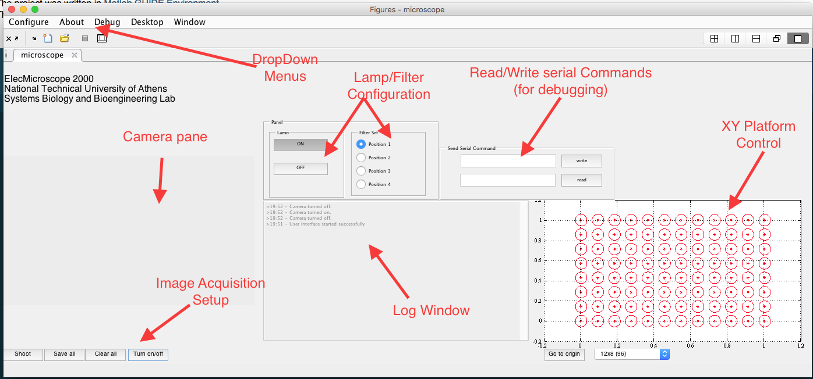

GUI Overview¶
Below a general overview of the GUI is presented.

{kind=link}
ElecMicroscope2000 running on a MacOS 10.10
Through the window, the user can interact with the following features:
- Camera pane
- The user can capture an image using the ‘Shoot’ button. The photos taken are stored in internal buffer. The user can finally press the ‘Save all’ button to store them in the path specified This behavior can be altered through the ‘Configure’ drop-down menu (Configure > Save Intsantly).
- By default the saving directory is the one from which you launch the program. This can also be changed through the ‘Configure’ menu (Configure > Image Path...)
- If the user decides not to permanently store the images taken until that point, he can press the ‘Clear all’ button. This clears all the images stored in the internal buffer.
- Lamp - Filter pane
- Using this panel the user can select when to turn on the the microscope lamp as well as select which filter of the microscope is in use. By default the lamp is OFF and the filter is set to position 3.
- Communication with the Arduino
- At first the user must issue the port to which the arduino is connected to. This can be accomplished using the ‘Arduino Port‘ option from the Confgure drop-down menu.
- When the arduino doesn’t respond as expected the user can start debugging the communication by sending arbitrary serial commands to the arduino and then reading the output written by the arduino in the serial. This can be accomplished using the ‘Send Serial Command’ pane located in the right-half plane of the GUI.
- The log window is meant to give feedback to the user about each of the commmands they issue. It also provides two modes of communication [SERIAL] and [LOOP] so that the user knows wether the command is sent through the serial port to the arduino or not.
- XY Platform Control
- The user can control the movement of the platform on which the speciments for analysis are set. Currrently the control panel for the platform is not functional and the suggested way of controlling the platform is through the arrow keys [LEFT, RIGHT, UP, DOWN]. More specifically when the user presses (and holds) one of the buttons, the platform moves to the specified direction until the they let the key go. This way the motion of the platform is executed in an easy and intuitive way.
Warning
The command issued is only sent to the serial if [SERIAL] is indicated in the beginning of the corresponding log window message. If the arduino cannot be reached or if the connection has not been initiated then the communication is in [LOOP] mode, meant for testing purposes only.